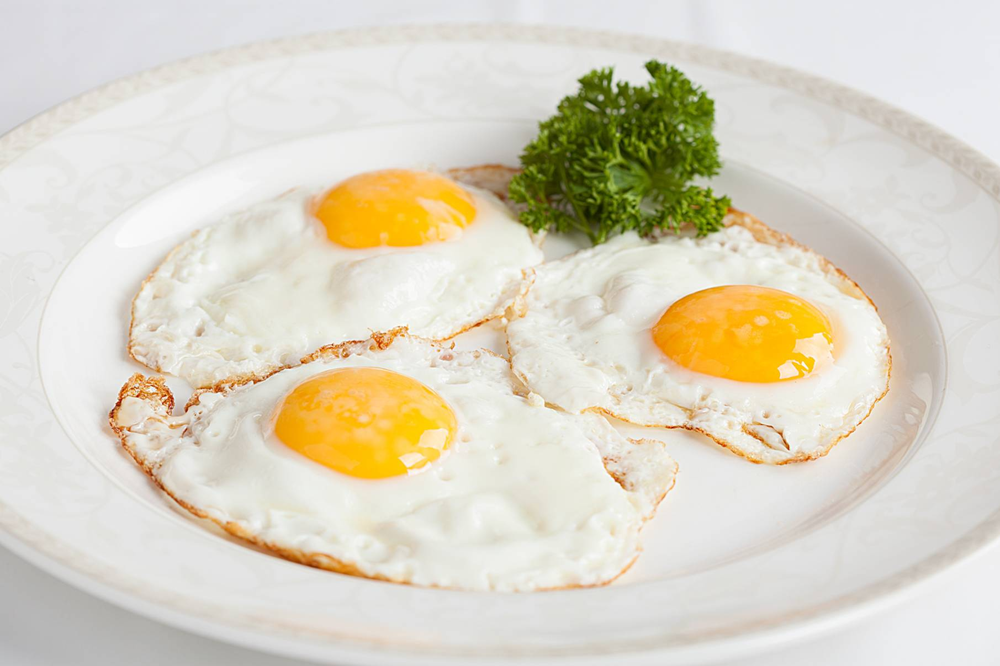

Классическая яичница-глазунья
Рецепт:
- 1–2 столовые ложки растительного масла или кусочек сливочного
- 1 или несколько яиц
- соль - по вкусу
Приготовление
- Слегка прогрейте сковородку. Вылейте растительное масло или растопите сливочное, после этого выключите газ на 30–40 секунд
- Аккуратно добавьте яйца. Можно разбить их сразу над сковородой или же в небольшую отдельную ёмкость, перелив затем в сковороду.
- Жарить яичницу на медленном огне нужно 4–5 минут. Если температура повыше, потребуется немного меньше времени. Блюдо будет готовым, когда белок побелеет и схватится. Не забывайте, что желток при этом должен остаться жидким.